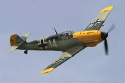

Certa noite de abril de 1943, quando a batalha pela Tunísia estava entrando em sua última fase, uma mensagem para o Quartel-General naval britânico em Sousse, vinda de Sir Andrew Cunningham, Comandante em Chefe das Forças navais no Mediterrâneo, determinava que três lanchas torpedeiras “efetuassem um lento patrulhamento ao largo da península do Cabo Bon durante o dia e abrissem as rotas marítimas naquela área”.
Parecia loucura. As lanchas torpedeiras operavam à noite. Não se esperava que elas cometessem suicídio à luz do dia sob o fogo das baterias de costa e enxames de caças Messerschmitt 109.
Mas havia boas razões para aquela ordem. As tropas aliadas estavam prontas para desencadear a ofensiva final e era indispensável ao general Eisenhower saber se a Afrika Korps iria organizar uma Dunquerque. Aviões de reconhecimento não podiam conseguir informações precisas sobre os muito bem camuflados locais de desembarque que poderiam ser usados para uma evacuação ou as posições de artilharia de costa que os protegeriam. Não havia outra saída senão mandar embarcações pequenas para uma quase certa destruição.
A noite inteira, as tripulações das lanchas torpedeiras 639, 633 e 637 lidaram com pedaços de pano usado e tinta branca, preta e vermelha para confeccionar insígnias de combate nazistas. O velho ardil de uma bandeira falsa era a única esperança deles. Mesmo assim, apesar do otimismo do comandante da operação, Capitão-tenente Stewart Gould , ela era tênue. Ele e seus dois comandantes de lancha, capitães-tenentes Henry Butler e George Russel, receavam que aviões de reconhecimento alemães identificassem as linhas inconfundíveis de uma lancha torpedeira britânica.
Os três minúsculos barcos deslizaram para fora do porto, e a uns oitocentos metros o vigia avistou uma poderosa bateria de defesa de costa. Mas os alemães na praia apenas acenaram, saudando. Nas lanchas, as brancas insígnias britânicas permaneciam enroladas nos braços das vergas, prontas para serem desfraldadas no momento em que entrassem em combate. Suas suásticas tremulavam elegantemente ao vento.
Os barcos cruzaram lentamente através do Golfo de Hanamet, passaram Nabeul, examinando cada enseadinha. Os nazistas ainda acenavam das praias, enquanto os comandantes das lanchas registravam em suas cartas toda posição de canhões camuflada e toda a barraca oculta na macega.
Estavam se aproximando de Kelibia Point, o local de onde o Eixo poderia provavelmente procuraria fazer a evacuação da área, e haviam dito a Gould para descobrir a capacidade dos molhes que estavam sendo construídos. Possantes canhões acompanhavam-nos solenemente; qualquer um deles poderia lançar seus barcos na eternidade com um único tiro. Por meia hora, porém e seus colegas cruzaram de um lado para o outro, enquanto seus oficiais enchiam seus cadernos de anotações e os soldados nazistas a apenas poucas centenas de metros, trabalhavam febrilmente no cais.
Do outro lado da ponte, em Kelibia, estava o principal ancoradouro dos navios de guerra e de suprimento alemães. Gould resolveu dar uma espiada . O porto estava defendido por baterias de 150 mm - fato que que nem Gould nem o Almirante Cunnigham sabiam na ocasião. Porém nenhum tiro foi disparado quando as três lanchas torpedeiras se acercaram calmamente da enseada e ancoraram. Por meia hora, Gould e seus oficiais localizaram posições de canhões, radares, depósitos, navios, pilhas de munições e concentrações de tropas.
Apenas a poucas centenas de metros, oficiais alemães e italianos os fitavam com binóculos. Houve um momento ruim quando grande tubos de uma bateria começaram a rodar na direção deles. As sinistras bocas, todavia continuaram a girar depois de passar por eles. Prisioneiros alemães, posteriormente, revelaram que todos pensaram que eram Barcos-E alemães disfarçados para parecerem embarcações inglesas.
Gould, tendo terminado seu levantamento cartográfico, tranquilamente levantou ferro e deslocou-se mais para o interior do território inimigo. De tempos em tempos, um avião alemão vinha em cima deles. Mas os Messerschmitt, jamais desconfiando que navios aliados pudessem ir especular em portos do Eixo à luz do dia, nem sequer lhes prestavam atenção.

Às nove e meia da manhã, Gould estava a cem quilômetros dentro das linhas inimigas. Descobrir tudo o que o Almirante Cunningham queria saber. Mas havia ainda a questão de “abrir as rotas marítimas” que a ordem dada a ele mencionara. Estava procurando resolver como começar, quando avistou dois caça-minas italianos em uma pequena angra. Um navio alemão de escolta estava parado próximo. Diretamente atrás deles, havia uma fábrica de aparência importante.
Gould fez o sinal de combate. Nos três minúsculos mastros desapareceram as suásticas e a cruz de São Jorge foi desfraldada. Durante vinte minutos, a uma distância de uns 300 metros, as lanchas torpedeiras varreram os caça-minas e o navio de escolta com granadas de 2 libras (cerca de 4,5 kg), canhões automáticos e metralhadoras. As granadas que não acertavam os navios iam bater na fábrica atrás. As tripulações do Eixo, surpreendidas, não puderam resistir. Atiraram-se na água.
Os caça-minas logo foram ao fundo. Quando o navio maior foi incendiado, pilotos nazistas corriam para as naceles em aeródromos próximos. Mas Gould já estava voltando antes deles começarem a mexer-se.
Regressou pelo caminho pelo qual viera, atirando em tudo que lhe parecia interessante. As granadas de 2 libras pouca destruição causaram nos aeródromos de costa, embora seu efeito moral fosse devastador. O Comando Alemão, pensando que estivesse em marcha uma incursão em grande escala, determinou às pressas que as tropas marchassem para o litoral e que mais aviões decolassem.
Após derrubar um avião de observação que provavelmente lhe causaria grandes dificuldades, Gould topou com algo importante. Disseminados ao longo da praia, havia vários aviões alemães de transporte, remanescentes de um comboio aéreo de 100 aviões do Eixo que havia sido atacado. Alguns haviam caído, porém, muitos estavam ainda intactos. A curta distância, os atiradores de Gould destruíram todos eles.
Gould poderia então ter voltado honrosamente à base, mas assim que chegou ao lado de Kelibia Point, a lancha 639 fez um sinal: “Tenciono cerrar e bombardear”. Butler na 633 e Russel na 637 olharam espantados quando o barco de seu chefe começou a virar.
“Deus meu”!, disse um dos timoneiros, numa voz estupefata, “vamos ser heróis pra cachorro”.
E estava certo.
Cerca de um quilometro e meio ao largo da praia havia um navio mercante de bom tamanho, guardado por dois contratorpedeiros, um para-sol de aviões de caça e baterias de costa de costa de 6 polegadas. Com o sinal “Adiante a toda a força”, Goud lançou um dos mais imprudentes ataques navais da história naval. Ele tinha estudado tática para uma situação dessas com Butler e Russel na noite anterior.
A 639 de Gould dirigiu-se para os contratorpedeiros a fim de atrair o fogo deles, enquanto a 633 e 637 manobravam de modo a poder torpedear o cargueiro. Levaram doze minutos para fazer isso, e, nesse intervalo o inferno se desencadeou.
Apenas um segundo depois de Gould ter aberto fogo no contratorpedeiro da testa, com seus ridiculamente ridículos de canhões automáticos, os navios de guerra nazistas começaram a fulminá-lo com rajadas de canhões de 101 mm. As baterias costeiras de 150 abriram fogo. Um momento depois, canhões antiaéreos aderiram, atirando ao nível do mar. Caças mergulharam em cima dos ultrajantes barquinhos.
O incrível aconteceu. “Acertem o passadiço daquele contratorpedeiro”, berrou Gould para seus atiradores, por sobre a barulheira das balas e estilhaços batendo contra a couraça de sua diminuta torre de comando. E em poucos minutos, o contratorpedeiro começou a recuar, seriamente danificado. Driblando jatos de água que de instante a instante ameaçavam engoli-la, a 639 lançou uma cortina de fumaça entre o segundo contratorpedeiro e as outras lanchas, enquanto elas se aprontavam para a sua missão decisiva. A menos de 1000 metros do mercante nazista, Butler mandou seus dois torpedos para dentro da água. Um instante depois, os de Russell estavam a caminho. Houve uma explosão ensurdecedora, o navio nazista praticamente saltou dentro d’água – em pedaços.
“Retirar”, foi o sinal da 639. Mas Butler e Russel hesitaram, pois a 639 estava pegando fogo. Em seu passadiço estava deitado Gould, com o lado direito metralhado do rosto até o joelho. Poucos metros adiante jazia morto seu imediato, liquidado instantaneamente por um arrebentamento de granada. Seu primeiro-tenente, John Hayden, comandava o barco, com uma bala nas costas.
Granadas de 6 polegadas revolveram a água, quando Butler e Russel acostaram ao barco líder para apanhar Gould e a tripulação.
“Meia máquina!”, bradou o mestre da 639. “Há um guarda-marinha ferido lá embaixo”.
E, enquanto os barcos de socorro pacientemente esperavam no inferno em torno deles, o mestre abriu caminho através da fumaça e das chamas e voltou.
“Ele está aqui”, gritou triunfante.

O guarda-marinha, com metade da mão esquerda arrancada e o queixo espatifado por balas, conseguiu sorrir por trás do sangue.
Quando o último dos sobreviventes da 639 foi trazido para bordo das duas lanchas, quarenta caças do Eixo atacaram. Mas foram logrados novamente. Driblando e serpenteando, com os convés cheio de mortos e feridos, Butler e Russel seguiram para Sousse. Até os feridos aplaudiram quando um dos atiradores abateu um Focke-Wulf, fazendo-o cair em chamas no mar. Nesse instante, um esquadrão de caças aliados surgiu roncando e limpou o céu de aviões inimigos.
“Foi uma bela jogada”, comentou o Capitão-tenente Gould, pouco antes de morrer, uma hora após haver cumprido sua missão.